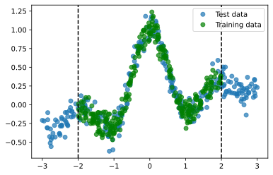
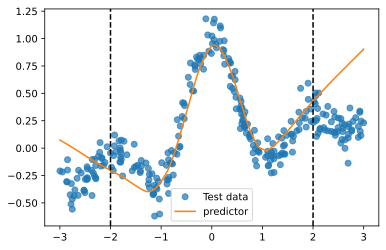
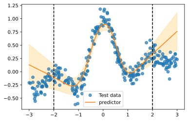

Quickstart tutorial¶
In this tutorial we briefly introduce the fundamentals of Afterglow using a toy regression problem.
Problem setup and dataset¶
Let \( f(x) = \frac{\sin 4 x}{4x} + \frac{x}{10} + \epsilon \) where \( \epsilon\sim\mathcal{N}(0, 0.1) \). We generate the training dataset \( \mathcal{D}\_{train} = \{x, f(x)\} \) with \( x\sim\mathcal{U}[-2,2] \) and the test dataset with \( x\sim\mathcal{U}[-3,3] \) so that some out of distribution samples are present at test time.
import torch
from torch.utils.data import TensorDataset, DataLoader
import matplotlib.pyplot as plt
# create dataset
def wave_dataset(num_samples: int, span: float = 4, var: float = 0.1):
X = (span * (torch.rand(num_samples, 1) - 0.5)).sort(dim=0)[0]
Y = torch.sin(4 * X) / (4 * X) + X / 10 + var * torch.randn(*X.shape)
return X, Y
train_span, test_span = 4, 6
num_samples = 300
X_train, Y_train = wave_dataset(num_samples=num_samples, span=train_span)
X_test, Y_test = wave_dataset(num_samples=num_samples, span=test_span)
train_set = TensorDataset(X_train, Y_train)
test_set = TensorDataset(X_test, Y_test)
dl_train = DataLoader(train_set, batch_size=1, shuffle=True)
dl_test = DataLoader(test_set, batch_size=len(Y_test), shuffle=False)
The datasets look like this:
plt.figure()
plt.plot(X_test, Y_test, "o", alpha=0.7, label="Test data")
plt.plot(X_train, Y_train, "og", alpha=0.7, label="Training data")
plt.axvline(x=-train_span / 2, color="k", linestyle="--")
plt.axvline(x=train_span / 2, color="k", linestyle="--")
plt.legend()
plt.show()

Training a model¶
The classical approach¶
The classical maximum-likelihood approach to train a model is illustrated below.
# instantiate a model
model = torch.nn.Sequential(
torch.nn.Linear(1, 512),
torch.nn.ReLU(),
torch.nn.Linear(512, 1),
)
# train it
optimizer = torch.optim.SGD(model.parameters(), lr=0.001, weight_decay=0.001)
criterion = torch.nn.MSELoss(reduction="sum")
epochs = 20
for i in range(epochs):
for data in dl_train:
batch, target = data[0], data[1]
optimizer.zero_grad()
output = model(batch)
loss = criterion(output, target)
loss.backward()
optimizer.step()
This approach will produce a model that gives point estimates; the model will not be able to give any information about its level of confidence on its own predictions.
y_pred = model(X_test).detach()
plt.figure()
plt.plot(X_test, Y_test, "o", alpha=0.7, label="Test data")
plt.plot(X_test, y_pred, label="predictor")
plt.axvline(x=-train_span / 2, color="k", linestyle="--")
plt.axvline(x=train_span / 2, color="k", linestyle="--")
plt.legend()
plt.show()

We see that the model fails to predict correctly on out-of-distribution data.
Using afteglow to enable uncertainty estimation features¶
Enabling uncertainty estimation with afterglow is extremely easy, and can be achieved with a single line of code, as we see in this example:
from afterglow import enable_swag
# instantiate a model
model = torch.nn.Sequential(
torch.nn.Linear(1, 512),
torch.nn.ReLU(),
torch.nn.Linear(512, 1),
)
# enable SWAG tracker
enable_swag(
module=model,
start_iteration=3000, # when to start tracking the parameters
max_cols=30, # number of columns to approximate the covariance matrix
update_period_in_iters=1, # update frequency
)
# train as usual
optimizer = torch.optim.SGD(model.parameters(), lr=0.001, weight_decay=0.001)
criterion = torch.nn.MSELoss(reduction="sum")
epochs = 20
for i in range(epochs):
for data in dl_train:
batch, target = data[0], data[1]
optimizer.zero_grad()
output = model(batch)
loss = criterion(output, target)
loss.backward()
optimizer.step()
Now a trajectory_tracker object is attached to the model, equipping it with uncertainty estimation capabilities. In particular, the predict_uncertainty method outputs the mean and standard deviation associated to the predictions of the model.
y_pred, y_std = model.trajectory_tracker.predict_uncertainty(X_test, num_samples=100)
plt.figure()
plt.plot(X_test, Y_test, "o", alpha=0.7, label="Test data")
plt.plot(X_test, y_pred, label="predictor")
plt.fill_between(
X_test.squeeze(),
(y_pred - 3 * y_std).squeeze(),
(y_pred + 3 * y_std).squeeze(),
alpha=0.2,
color='orange',
)
plt.axvline(x=-train_span / 2, color="k", linestyle="--")
plt.axvline(x=train_span / 2, color="k", linestyle="--")
plt.legend()
plt.show()

Now the output of the model is much more informative for the user, providing confidence intervals that can be used, for example, to understand when to trust the model.